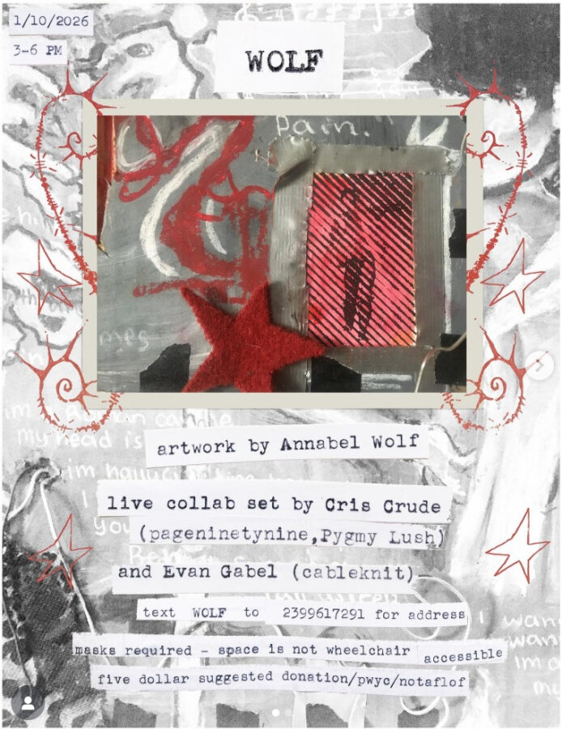

 Annabel Wolf: WOLF Saturday, January 10, 2026text WOLF to 2399617291 for address Opening Saturday, January 10th, from 3PM - 6PM No description available. Annabel WolfAnnabel Wolf: WOLFCris CrudeEvan Gabel More events on this date Original listing